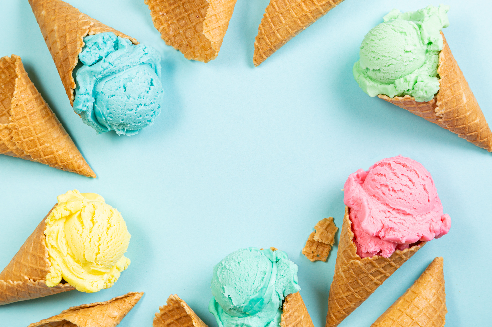
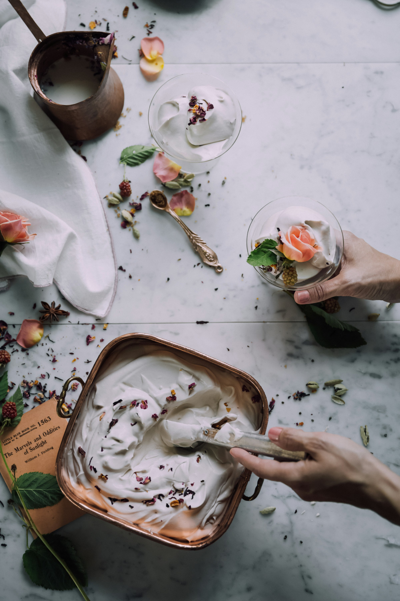

<
Berry Sweet Creamery
Est. 1965
301 Scoop Street
Chillville, NY 11248
About Us
1940s
Born and raised on a dairy farm, my family spent our days milking and caring for the cows. Our parents always prioritized the importance of high-quality milk that my siblings cherished each day. Our favorite treat involving milk being our homemade ice cream of course! As teenagers we started experimenting with the flavors, and despite trying other brands, nothing beat the richness of our milk. Friends and neighbors started encouraging us to take our treats to the streets and start selling.
After talking as a family, we could not resist the urge to dive into this idea so we started planning and saving money. We knew we had the quality, but to expand our menu we needed fellow farms to supply fruit. And Berry Sweet Creamery was born! And ever since we have delivered handcrafted ice cream made with love and care to our community. Spreading our childhood joy, from our family to yours.
1960s
1970s
Our next generation was born and grew up loving Berry Sweet Creamery. Meanwhile we grew our menu to include ice cream sandwiches, milkshakes, and more!. Our reputation is undeniable, we had become a local favorite.
During the pandemic we started delivering ice cream straight to your doors!
2020
Ingredient Sourcing
Here at Berry Sweet Creamery, our milk continues to be delivered from our family's very own dairy farm. All our treats and flavors are made with fresh fruit directly from local farmers and producers that we know and trust. We never waste, any and all food scraps go straight to compost at our and other's farms.

Our Mission
Berry Sweet Creamery strives to support our community’s happiness & health by committing to always using fresh ingredients and putting care into every step of the process. Our ideas meaningfully weave tradition and innovation to create the rich and creamy combos that we all love.

Hear from our Customers!
I have grown up going to Berry Sweet and they are the nicest people you’ll ever meet serving up some phenomenal ice cream. I appreciate their commitment to good ingredients and transparency in where they source from.
Zyair W.
I met Henry at Berry Sweet eight years ago when we were still in high school. We started dating and the ice cream there was so delicious that we kept coming back. Now we are celebrating our honeymoon and have Berry Sweet to thank!
Maria P. & Henry J.
Berry Sweet rocks! I bring my kids here to reward them for good grades cause it’s their favorite. Once my son dropped his ice cream and they immediately gave him a new one. Very attentive & caring workers and the only place I get ice cream!
Nushi B.